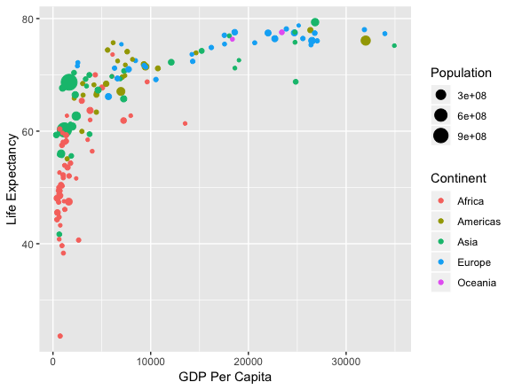
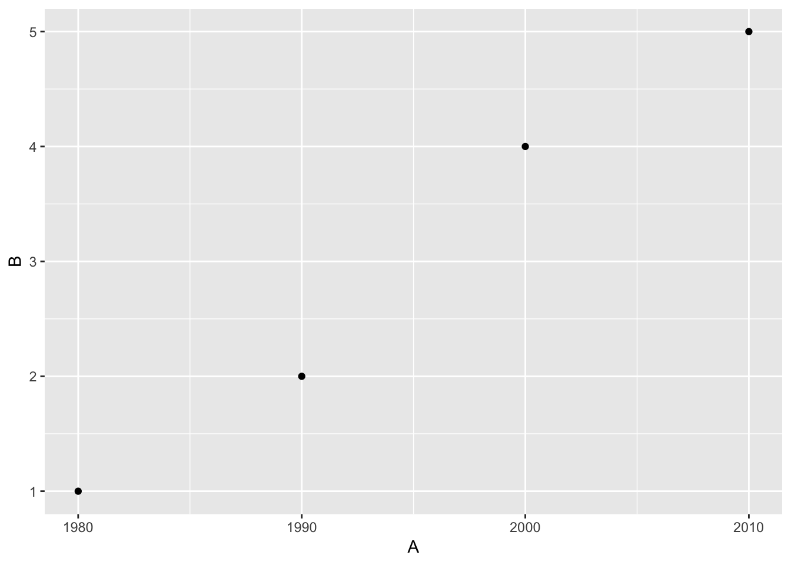
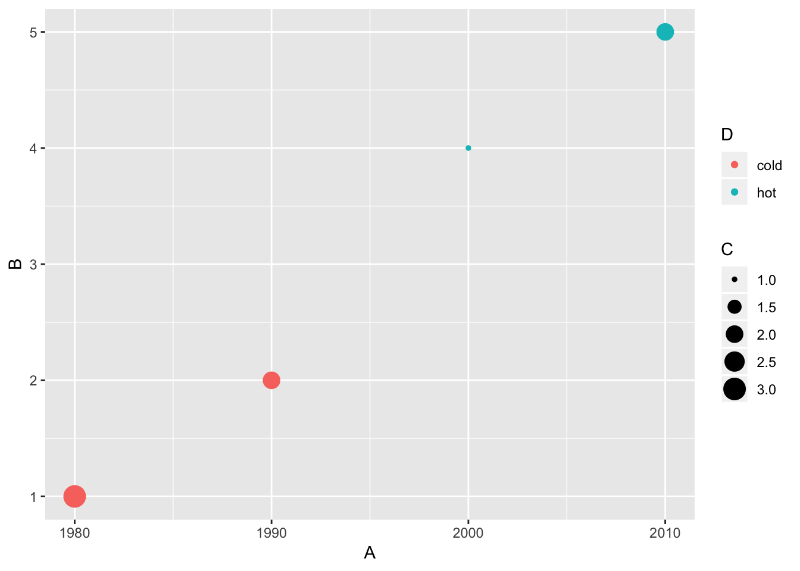
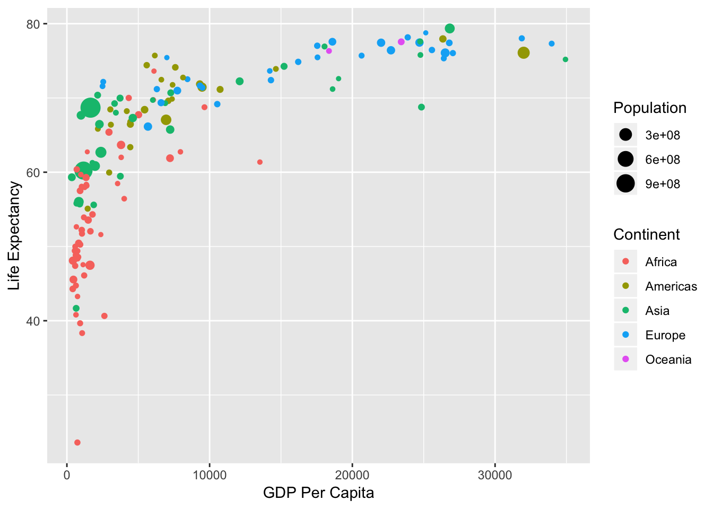

In this section, we’ll discuss the Grammar of Graphics developed by Leland Wilkinson and implemented in R via Hadley Wickham. We’ll see how this is applied to a scatterplot with and without a regression line. These ideas will then be extended in Part 2 of the workshop.
The Grammar of Graphics

- What are the variables here?
- What is the observational unit?
- i.e., what is the THING being measured?
- How are the variables mapped to aesthetics?
What is a statistical graphic?
A mapping of data variables
to aes()thetic attributes
of geom_etric objects.
Back to basics
Consider the following data in tidy format:
- Sketch the graphics below on paper, where the
x-axis is variable A and the y-axis is variable B
- A scatterplot
- A scatter plot where the
color of the points corresponds to D and the size of the points corresponds to C
- A scatterplot
library(ggplot2)
ggplot(data = simple_ex, mapping = aes(x = A, y = B)) +
geom_point()

- A scatter plot where the
color of the points corresponds to D and the size of the points corresponds to C
ggplot(data = simple_ex, mapping = aes(x = A, y = B, color = D, size = C)) +
geom_point()

Note that R isn’t “smart enough” to realize that “cold” should probably be set to blue and “hot” should be set to red. These are the default colors chosen based on alphabetic order of the words “cold” and “hot”. These colors can be changed to something else as well using the scale_color_manual() function though.
Your Task
Recreate the gapminder plot shown at the beginning of this workshop (and below) using ggplot2 and the gapminder data frame in the gapminder package. The Data Visualization Cheat Sheet from RStudio may be helpful. In particular, check out ?labs to better understand how to add labels to your plots.
Note: To focus on only the rows in the data frame corresponding to 1992 we’ve created a dataset and saved the file as a CSV (basic spreadsheet) file in the data folder. Recall from this morning’s Data Wrangling workshop, the filter function from dplyr can be used to perform this. (Try on your own to do this if you wish!)
library(readr)
gap1992 <- read_csv("data/gap1992.csv")
## Parsed with column specification:
## cols(
## country = col_character(),
## continent = col_character(),
## year = col_integer(),
## lifeExp = col_double(),
## pop = col_integer(),
## gdpPercap = col_double()
## )
#Space for your answer here.
## Could also be done with
library(gapminder)
gap1992 <- gapminder %>%
filter(year == 1992)
## ONE SOLUTION
library(ggplot2)
ggplot(data = gap1992,
mapping = aes(x = gdpPercap, y = lifeExp, size = pop, color = continent)) +
geom_point() +
labs(x = "GDP Per Capita",
y = "Life Expectancy",
size = "Population",
color = "Continent")

What you learned in this section
- Identifying plot aesthetics
- Mapping data variables to aesthetics using the Grammar of Graphics
- Applying a line of best fit to a scatterplot
- Using transformations on your data and labeling your axes
LS0tCnRpdGxlOiAiUGFydCAxIC0gSW50cm8gdG8gdGhlIGdSYW1tYXIgb2YgZ1JhcGhpY3Mgd2l0aCBgZ2dwbG90MmAgU09MVVRJT05TIgphdXRob3I6ICJDaGVzdGVyIElzbWF5IgpvdXRwdXQ6IAogIGh0bWxfZG9jdW1lbnQ6CiAgICBjb2RlX2Rvd25sb2FkOiB0cnVlCiAgICBjb2RlX2ZvbGRpbmc6IHNob3cKLS0tCgpJbiB0aGlzIHNlY3Rpb24sIHdlJ2xsIGRpc2N1c3MgdGhlIEdyYW1tYXIgb2YgR3JhcGhpY3MgZGV2ZWxvcGVkIGJ5IFtMZWxhbmQgV2lsa2luc29uXShodHRwOi8vd3d3LnBvd2VsbHMuY29tL2Jvb2svdGhlLWdyYW1tYXItb2YtZ3JhcGhpY3MtOTc4MDM4NzI0NTQ0NykgYW5kIGltcGxlbWVudGVkIGluIFIgdmlhIFtIYWRsZXkgV2lja2hhbV0oaHR0cDovL3d3dy5wb3dlbGxzLmNvbS9ib29rL2dncGxvdDItZWxlZ2FudC1ncmFwaGljcy1mb3ItZGF0YS1hbmFseXNpcy05NzgzMzE5MjQyNzUwLzY4LTQyOCkuICBXZSdsbCBzZWUgaG93IHRoaXMgaXMgYXBwbGllZCB0byBhIHNjYXR0ZXJwbG90IHdpdGggYW5kIHdpdGhvdXQgYSByZWdyZXNzaW9uIGxpbmUuICBUaGVzZSBpZGVhcyB3aWxsIHRoZW4gYmUgZXh0ZW5kZWQgaW4gUGFydCAyIG9mIHRoZSB3b3Jrc2hvcC4KCiMjIFRoZSBHcmFtbWFyIG9mIEdyYXBoaWNzCgohW10oZmlncy9nYXBtaW5kZXIyLnBuZykKCi0gV2hhdCBhcmUgdGhlIHZhcmlhYmxlcyBoZXJlPwotIFdoYXQgaXMgdGhlIG9ic2VydmF0aW9uYWwgdW5pdD8KICAgIC0gaS5lLiwgd2hhdCBpcyB0aGUgVEhJTkcgYmVpbmcgbWVhc3VyZWQ/Ci0gSG93IGFyZSB0aGUgdmFyaWFibGVzIG1hcHBlZCB0byBhZXN0aGV0aWNzPwoKLS0tCgojIyBXaGF0IGlzIGEgc3RhdGlzdGljYWwgZ3JhcGhpYz8KCgojIyMgQSBgbWFwcGluZ2Agb2YgYGRhdGFgIHZhcmlhYmxlcwoKIyMjIHRvIGBhZXMoKWB0aGV0aWMgYXR0cmlidXRlcwoKIyMjIG9mIGBnZW9tX2BldHJpYyBvYmplY3RzLgoKLS0tCgoqKkJhY2sgdG8gYmFzaWNzKioKCkNvbnNpZGVyIHRoZSBmb2xsb3dpbmcgZGF0YSBpbiB0aWR5IGZvcm1hdDoKCmBgYHtyIGluY2x1ZGU9RkFMU0V9CmxpYnJhcnkoZHBseXIpCgpzaW1wbGVfZXggPC0gZGF0YV9mcmFtZSgKICAgIEEgPSBjKDE5ODAsIDE5OTAsIDIwMDAsIDIwMTApLAogICAgQiA9IGMoMSwgMiwgNCwgNSksCiAgICBDID0gYygzLCAyLCAxLCAyKSwKICAgIEQgPSBjKCJjb2xkIiwgImNvbGQiLCAiaG90IiwgImhvdCIpCiAgKQpzaW1wbGVfZXgKYGBgCgotIFNrZXRjaCB0aGUgZ3JhcGhpY3MgYmVsb3cgb24gcGFwZXIsIHdoZXJlIHRoZSBgeGAtYXhpcyBpcyB2YXJpYWJsZSBgQWAgYW5kIHRoZSBgeWAtYXhpcyBpcyB2YXJpYWJsZSBgQmAKCjEuIEEgc2NhdHRlcnBsb3QKMi4gQSBzY2F0dGVyIHBsb3Qgd2hlcmUgdGhlIGBjb2xvcmAgb2YgdGhlIHBvaW50cyBjb3JyZXNwb25kcyB0byBgRGAgYW5kIHRoZSBgc2l6ZWAgb2YgdGhlIHBvaW50cyBjb3JyZXNwb25kcyB0byBgQ2AKCi0tLQoKMS4gQSBzY2F0dGVycGxvdAoKYGBge3J9CmxpYnJhcnkoZ2dwbG90MikKZ2dwbG90KGRhdGEgPSBzaW1wbGVfZXgsIG1hcHBpbmcgPSBhZXMoeCA9IEEsIHkgPSBCKSkgKyAKICBnZW9tX3BvaW50KCkKYGBgCgoyLiBBIHNjYXR0ZXIgcGxvdCB3aGVyZSB0aGUgYGNvbG9yYCBvZiB0aGUgcG9pbnRzIGNvcnJlc3BvbmRzIHRvIGBEYCBhbmQgdGhlIGBzaXplYCBvZiB0aGUgcG9pbnRzIGNvcnJlc3BvbmRzIHRvIGBDYAoKYGBge3J9CmdncGxvdChkYXRhID0gc2ltcGxlX2V4LCBtYXBwaW5nID0gYWVzKHggPSBBLCB5ID0gQiwgY29sb3IgPSBELCBzaXplID0gQykpICsgCiAgZ2VvbV9wb2ludCgpCmBgYAoKTm90ZSB0aGF0IFIgaXNuJ3QgInNtYXJ0IGVub3VnaCIgdG8gcmVhbGl6ZSB0aGF0ICJjb2xkIiBzaG91bGQgcHJvYmFibHkgYmUgc2V0IHRvIGJsdWUgYW5kICJob3QiIHNob3VsZCBiZSBzZXQgdG8gcmVkLiBUaGVzZSBhcmUgdGhlIGRlZmF1bHQgY29sb3JzIGNob3NlbiBiYXNlZCBvbiBhbHBoYWJldGljIG9yZGVyIG9mIHRoZSB3b3JkcyAiY29sZCIgYW5kICJob3QiLiBUaGVzZSBjb2xvcnMgY2FuIGJlIGNoYW5nZWQgdG8gc29tZXRoaW5nIGVsc2UgYXMgd2VsbCB1c2luZyB0aGUgYHNjYWxlX2NvbG9yX21hbnVhbCgpYCBmdW5jdGlvbiB0aG91Z2guCgotLS0KCiMjIFlvdXIgVGFzawoKUmVjcmVhdGUgdGhlIGdhcG1pbmRlciBwbG90IHNob3duIGF0IHRoZSBiZWdpbm5pbmcgb2YgdGhpcyB3b3Jrc2hvcCAoYW5kIGJlbG93KSB1c2luZyBgZ2dwbG90MmAgYW5kIHRoZSBgZ2FwbWluZGVyYCBkYXRhIGZyYW1lIGluIHRoZSBgZ2FwbWluZGVyYCBwYWNrYWdlLiAgVGhlIFtEYXRhIFZpc3VhbGl6YXRpb24gQ2hlYXQgU2hlZXRdKGh0dHBzOi8vZ2l0aHViLmNvbS9yc3R1ZGlvL2NoZWF0c2hlZXRzL3Jhdy9tYXN0ZXIvZGF0YS12aXN1YWxpemF0aW9uLTIuMS5wZGYpIGZyb20gW1JTdHVkaW9dKGh0dHBzOi8vd3d3LnJzdHVkaW8uY29tL3Jlc291cmNlcy9jaGVhdHNoZWV0cy8pIG1heSBiZSBoZWxwZnVsLiBJbiBwYXJ0aWN1bGFyLCBjaGVjayBvdXQgYD9sYWJzYCB0byBiZXR0ZXIgdW5kZXJzdGFuZCBob3cgdG8gYWRkIGxhYmVscyB0byB5b3VyIHBsb3RzLgoKKipOb3RlKio6ICBUbyBmb2N1cyBvbiBvbmx5IHRoZSByb3dzIGluIHRoZSBkYXRhIGZyYW1lIGNvcnJlc3BvbmRpbmcgdG8gMTk5MiB3ZSd2ZSBjcmVhdGVkIGEgZGF0YXNldCBhbmQgc2F2ZWQgdGhlIGZpbGUgYXMgYSBDU1YgKGJhc2ljIHNwcmVhZHNoZWV0KSBmaWxlIGluIHRoZSBgZGF0YWAgZm9sZGVyLiBSZWNhbGwgZnJvbSB0aGlzIG1vcm5pbmcncyBbRGF0YSBXcmFuZ2xpbmcgd29ya3Nob3BdKGh0dHBzOi8vY2FzY2FkaWFyY29uZi13cmFuZ2xlLm5ldGxpZnkuY29tKSwgdGhlIGBmaWx0ZXJgIGZ1bmN0aW9uIGZyb20gYGRwbHlyYCBjYW4gYmUgdXNlZCB0byBwZXJmb3JtIHRoaXMuIChUcnkgb24geW91ciBvd24gdG8gZG8gdGhpcyBpZiB5b3Ugd2lzaCEpCgohW10oZmlncy9nYXBtaW5kZXIyLnBuZykKCmBgYHtyfQpsaWJyYXJ5KHJlYWRyKQpnYXAxOTkyIDwtIHJlYWRfY3N2KCJkYXRhL2dhcDE5OTIuY3N2IikKCiNTcGFjZSBmb3IgeW91ciBhbnN3ZXIgaGVyZS4KCiMjIENvdWxkIGFsc28gYmUgZG9uZSB3aXRoCmxpYnJhcnkoZ2FwbWluZGVyKQpnYXAxOTkyIDwtIGdhcG1pbmRlciAlPiUKICBmaWx0ZXIoeWVhciA9PSAxOTkyKQoKIyMgT05FIFNPTFVUSU9OCmxpYnJhcnkoZ2dwbG90MikKZ2dwbG90KGRhdGEgPSBnYXAxOTkyLCAKICAgICAgIG1hcHBpbmcgPSBhZXMoeCA9IGdkcFBlcmNhcCwgeSA9IGxpZmVFeHAsIHNpemUgPSBwb3AsIGNvbG9yID0gY29udGluZW50KSkgKwogIGdlb21fcG9pbnQoKSArCiAgbGFicyh4ID0gIkdEUCBQZXIgQ2FwaXRhIiwKICAgICAgIHkgPSAiTGlmZSBFeHBlY3RhbmN5IiwKICAgICAgIHNpemUgPSAiUG9wdWxhdGlvbiIsCiAgICAgICBjb2xvciA9ICJDb250aW5lbnQiKQpgYGAKCiMjIFdoYXQgeW91IGxlYXJuZWQgaW4gdGhpcyBzZWN0aW9uCgotIElkZW50aWZ5aW5nIHBsb3QgYWVzdGhldGljcwotIE1hcHBpbmcgZGF0YSB2YXJpYWJsZXMgdG8gYWVzdGhldGljcyB1c2luZyB0aGUgR3JhbW1hciBvZiBHcmFwaGljcyAKLSBBcHBseWluZyBhIGxpbmUgb2YgYmVzdCBmaXQgdG8gYSBzY2F0dGVycGxvdAotIFVzaW5nIHRyYW5zZm9ybWF0aW9ucyBvbiB5b3VyIGRhdGEgYW5kIGxhYmVsaW5nIHlvdXIgYXhlcw==